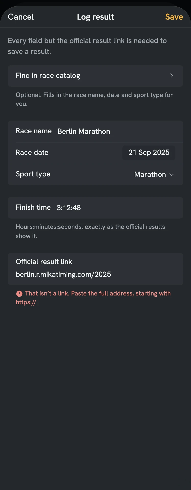
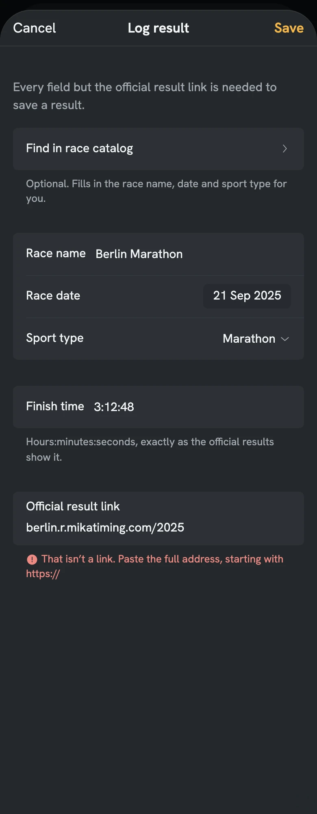
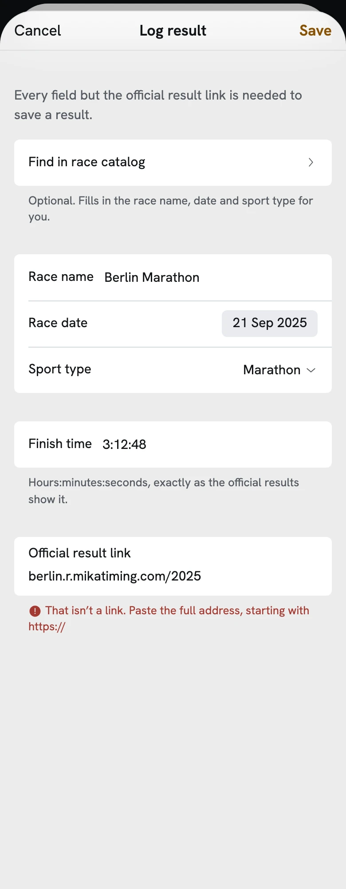
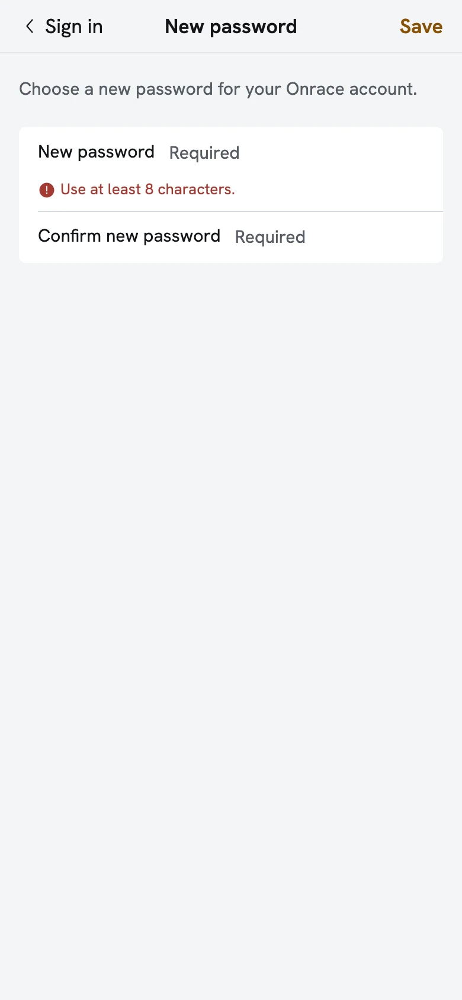
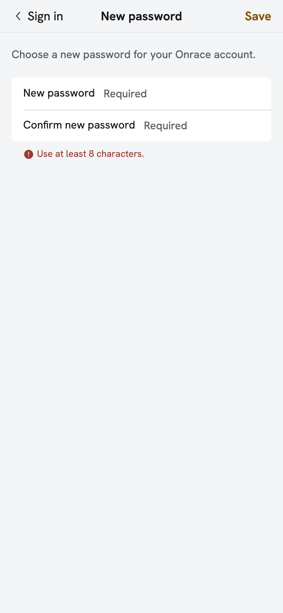
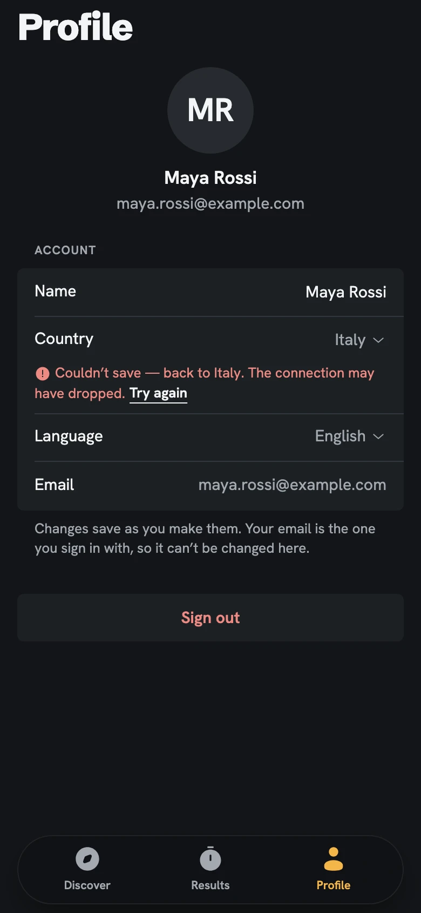
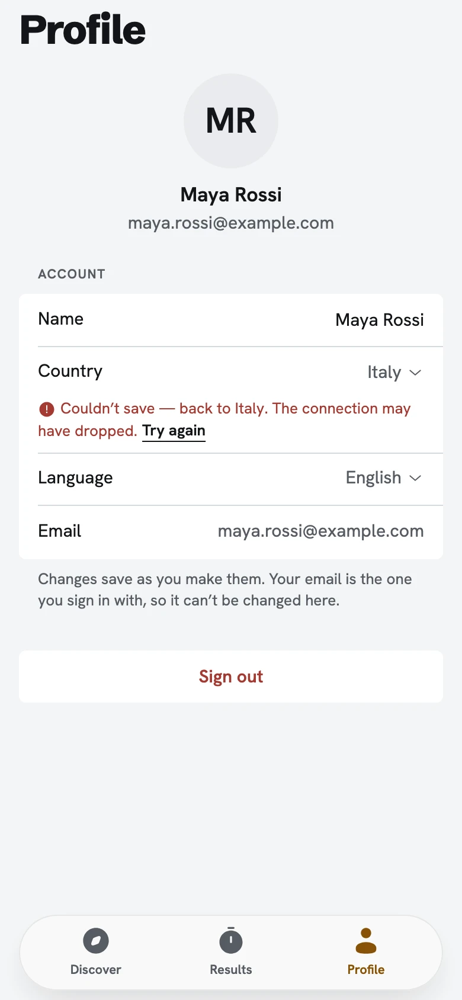

Sheets and field errors
2026-11-06. Sheets were too tight and the field typography crowded. Fixed once in the system, for every sheet and every field: tokens in design-system/tokens/tokens.css read by modal-sheet.css, and the field error in field-error.css. Before (856c97d, before this work) and after, dark and light, at 390 wide.
- Sheet spacing: 24px under the bar (
--sheet-content-top), 32px between groups (--sheet-group-gap), every row 52px (--sheet-row-min; a field or menu fills its row; a stacked field keeps--sheet-row-pad, 8px), 32px below the last group (--sheet-content-bottom), then the bottom safe area. - A one-field sheet sizes to its content: no empty band below.
- Field anatomy: where the title names the field, the row holds only the field, "https://…", its label kept as its accessible name.
- Field errors: the coral footnote with the small error icon under the group, outside its surface, 8px below it at the body's line height, never inside a row: Log result, New password, Profile, the sheet.
Filters sheet
Before: the form 8px under the bar, rows 44px. After: 24px under the bar, every row 52px (a menu fills its row), 32px between groups.


Log result
Before: the intro touched the bar (0px), text-field rows 60px beside 44px ones. After: 24px under the bar, every row 52px, the stacked link row 8px above and below.


Log result -error, fields missing
Before: each error inside its row. After: under the group, outside its surface, one footnote per field in the fields' order, 8px below the group.


Log result -error, not a link
The link's error was already under its group; the sheet spacing around it.



Add official result link, on Results list
Before: "Official result link" as title and as the field's label, the field 8px under the bar. After: the title alone names it; the field shows "https://…" (its label stays as its accessible name); 24px under the bar, sized to its content.


Add official result link, an invalid link
Before: the error inside the row. After: under the group, in the helper's place.


Add official result link, on Result detail
The same sheet over Result detail.


New password -error, too short
Before: the error inside the row. After: under the group, in its own helper's place.


New password -error, no match
Before: the error inside Confirm new password's row. After: under the group; New password's "At least 8 characters." stays below it.


Profile -error, a row didn’t save
Before: a row note inside the row. After: the same field error footnote under the group, with Try again; the group note stays.


